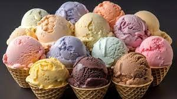
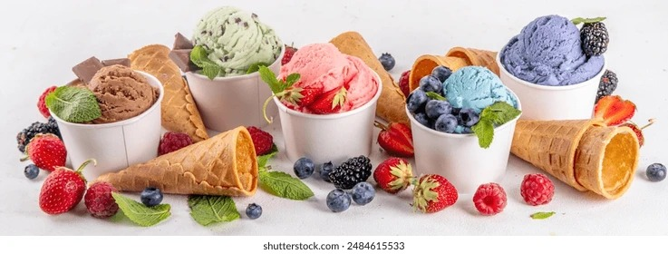

CREAMERY
Welcome to Our Shop

Ice cream is a popular frozen dessert, typically made from dairy products like milk and cream, with added sweeteners and flavorings. It's enjoyed worldwide and comes in a vast array of flavors, shapes, and textures. The basic process involves mixing ingredients, freezing them while stirring to prevent large ice crystals, and then incorporating air to achieve a creamy texture.
Ice cream is a delicious, frozen dessert, typically made from dairy products like milk and cream, and often sweetened with sugar and flavored with various ingredients. It's a popular treat enjoyed worldwide, with a wide range of flavors, textures, and forms. Ice cream is essentially a colloidal emulsion of water, ice, milk fat, milk protein, sugar, and air.

Ice cream is one of the most commonly loved desserts on this planet. It has a creamy, sweet taste that many people love. Ice cream is delicious and famous, and it is made from dairy products such as milk and cream, eggs, sugar and sorbet powder. Ice cream can be made using fruits, vegetables, and milk instead of sugar.
Ingredients and Manufacturing: Dairy Base: Milk, cream, and sometimes condensed milk form the foundation of many ice creams. Sweeteners: Sugar and other sweeteners provide the desired sweetness. Flavorings: Fruits, chocolate, nuts, and various extracts add flavor. Stabilizers and Emulsifiers: These help create a smooth texture and prevent ice crystal formation. Air: Air is incorporated during the churning process, contributing to the light and fluffy texture.
Types of Ice Cream: Dairy-based: The most common type, made with milk and cream. Non-dairy: Made with alternatives like soy, almond, or coconut milk. Frozen yogurt: A lower-fat option made with yogurt. Gelato: A denser, Italian-style ice cream with less air. Sorbet: A frozen dessert made with fruit and sugar, without dairy.

Ice cream may be served in dishes, eaten with a spoon, or licked from edible wafer ice cream cones held by the hands as finger food. Ice cream may be served with other desserts—such as cake or pie—or used as an ingredient in cold dishes—like ice cream floats, sundaes, milkshakes, and ice cream cakes—or in baked items such as Baked Alaska.
Italian ice cream is gelato. Frozen custard is a type of rich ice cream. Soft serve is softer and is often served at amusement parks and fast-food restaurants in the United States. Ice creams made from cow's milk alternatives, such as goat's or sheep's milk, or milk substitutes (e.g., soy, oat, cashew, coconut, almond milk, or tofu), are available for those who are lactose intolerant, allergic to dairy protein, or vegan. Banana "nice cream"[a] is a 100% fruit-based vegan alternative. Frozen yoghurt, or "froyo", is similar to ice cream but uses yoghurt and can be lower in fat. Fruity sorbets or sherbets are not ice creams but are often available in ice cream shops.

The meaning of the name ice cream varies from one country to another. In some countries, such as the United States and the United Kingdom,[1][2] ice cream applies only to a specific variety, and most governments regulate the commercial use of the various terms according to the relative quantities of the main ingredients, notably the amount of butterfat from cream.[3] Products that do not meet the criteria to be called ice cream, usually due to being reduced fat (often through cost reduction), are sometimes labelled frozen dairy dessert instead.[4] In other countries, such as Italy and Argentina, one word is used for all variants.